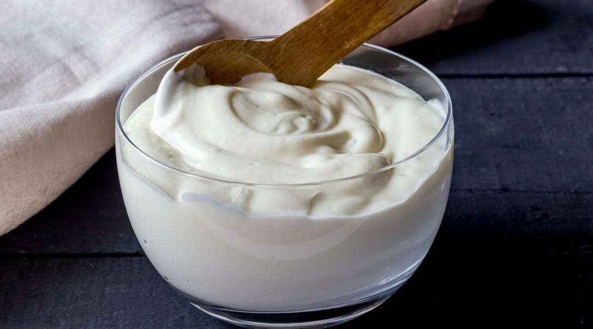

Yoghurt
This is an image of the final product of the recipe .

Homepage
Description
Here's a simple recipe for making homemade yogurt — creamy, tangy, and customizable. You only need two ingredients, and no fancy equipment is required (though a thermometer helps).
Ingredients
- 1 liter (4 cups) whole milk (for creamiest texture — but you can use 2% or skim)
- 22 tbsp plain yogurt with live active cultures (as your starter)
Steps
- Heat the Milk
- Pour the milk into a saucepan.
- Slowly heat over medium heat to 85°C (185°F) — stir occasionally so it doesn’t scorch.
- Remove from heat and let it cool to 43–46°C (110–115°F).
- Add the Starter
- In a small bowl, mix the 2 tbsp of plain yogurt with a few spoonfuls of the cooled milk.
- Whisk to combine, then stir it back into the pot of warm milk.
- Incubate the Yogurt
- Pour the mixture into a clean container (or leave it in the pot).
- Cover with a lid or plastic wrap.
- Keep it warm and still for 6 to 12 hours. The longer it sits, the tangier it becomes.
Ways to incubate a yoghurt without a yoghurt maker:
- Wrap the container in a towel and place in an oven (turned off) with the light on.
- Place it in a microwave with the door closed.
- Use a heating pad on low under a towel.
- Check and Chill
- After incubation, the yogurt should look set (like soft custard) and smell tangy.
- Chill in the fridge for at least 2 hours to fully firm up.
>
- Enjoy!
- Stir before serving if it's separated (whey is normal).
- Store in the fridge for up to 7-10 days.
- Save a few tablespoons to use as your next batch’s starter!
Optional Add-ins (after chilling):
- Fresh fruit or fruit compote
- Honey or maple syrup
- Granola
- Vanilla or cinnamon
- Jam swirl